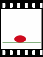

<html>
    <head>
        <script type="text/javascript" src="http://code.jquery.com/jquery-1.7.1.min.js"></script>
        <script type="text/javascript" src="http://threedubmedia.googlecode.com/files/jquery.event.drag-2.0.min.js"></script>
        <style type="text/css">
            .tab {
                position: absolute; width: 100px; height: 30px; border: black 2px solid; text-align: center;
            }
        </style>
        <script type="text/javascript">
            $(document).ready(function() {
                var Page = "";
                Page += "<div class=\"tab\" style=\"left:200px;top:200px;-webkit-transform:rotate(45deg);\" trav=200 deg=45 control=1></div>";
                Page += "<div style='width:320px;height:240px'></img></div>";
                $("body").html(Page);
                $('.tab').drag('init', function(ev, dd){
                    if(!$.data(this, 'tab')) {
                        var h = parseInt($(this).css("height"));
                        var w = parseInt($(this).css("width"));
                        var d = $(this).attr("deg")*Math.PI/180;
                        var od = (d>Math.PI)?((d>Math.PI*3/2)?Math.atan2(h,w)-d:-1*Math.atan2(h,w)-d):(d>Math.PI/2)?d-Math.atan2(h,w):Math.atan2(h,w)+d;
                        $.data(this, 'tab', {
                            origX: parseInt($(this).css("left")),
                            origY: parseInt($(this).css("top")),
                            trav: $(this).attr("trav"),
                            deg: d,
                            magic: Math.abs(Math.sqrt((h*h+w*w)/4)*Math.sin(od)-h/2),
                            control: $(this).attr("control")
                        });
                    }
                });
                $('.tab').drag(function(ev, dd) {
                    var data = $.data(this, 'tab');
                    var mX = dd.offsetX-data.origX;
                    var mY = dd.offsetY+data.magic-data.origY;
                    var d = Math.min(data.trav, Math.max(0,mY*Math.sin(data.deg)+mX*Math.cos(data.deg)));
                    //$(this).html(Math.round(data.magic))
                    var anim = $('#images'+data.control);
                    if (anim)
                        anim.attr("src","../images/"+Math.round((d/data.trav*(anim.attr("num")-1))+1)+".png");
                    $(this).css({
                        left: d*Math.cos(data.deg)+data.origX,
                        top: d*Math.sin(data.deg)+data.origY
                    });
                });
            })
        </script>
    </head>
    <body>
    </body>
</html>
